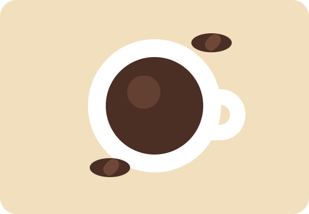

Guia simples para boas xícaras
Encontre seu próximo café favorito.
Explore cafeterias, compare métodos de preparo e salve suas preferências para escolher melhor onde ir e como preparar café em casa.
Ver cafeterias
Cafeterias em destaque
Opções para estudar, conversar, experimentar novos grãos ou fazer uma pausa durante a semana.
Qual experiência você procura?
Escolha uma opção e o site lembrará sua preferência neste navegador.